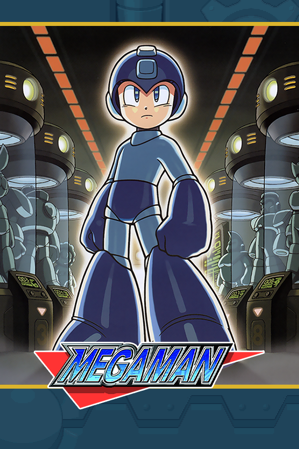

|  | |
| Playtime | Not Played |
| Last Activity | Never |
| Added | 4/29/2025 4:51:34 |
| Modified | 4/29/2025 23:39:58 |
| Completion Status | Not Played |
| Library | Playnite |
| Source | |
| Platform | Nintendo Entertainment System |
| Release Date | 12/17/1987 |
| Community Score | 76 |
| Critic Score | |
| User Score | |
| Genre | Platform |
| Developer | Hi Tech Expressions |
| Publisher | Capcom |
| Feature | Controller Support |
| Links | PCGamingWiki MobyGames |
| Tag | Side view |
Mega Man (known as Rockman in Japan) is a Japanese science fiction video game franchise developed and published by Capcom, featuring the protagonist of the same name. The original game was released for the Nintendo Entertainment System in 1987, and spawned a franchise that expanded to over 50 games on multiple systems. As of July 2024, the series has sold 42 million units worldwide. Mega Man has been popular among gamers and has been reimagined and evolved as a video game character for over 30 years.
The main series consists of eleven games, the standalone Mega Man & Bass, the spin-off Game Boy series (released in Japan as Rockman World), and various ports, remakes, and compilations. The core games in the franchise have all been set in a single continuity; the storyline of the "classic" series is succeeded by the Mega Man X, Mega Man Zero, Mega Man ZX, and the Mega Man Legends series. This timeline excludes the spin-off Mega Man Battle Network and Mega Man Star Force series, both of which take place in an alternate universe where the internet flourished rather than robotics.
The original Mega Man series, dubbed Classic Mega Man, marks the start of the franchise, released on the NES on December 17, 1987. In the original series, Mega Man is an android originally named Rock (nicknamed "Mega" in later installments), created as a lab assistant by the scientist Dr. Light with Dr. Wily as his partner. Following treachery by Dr. Wily in which he reprogrammed most of Dr. Light's robots, Rock volunteered to be converted into a fighting robot to defend the world from Wily's violent robotic threats, thus becoming Mega Man.
Mega Man is a side-scrolling action platformer. The player character must fight through the levels using Mega Man's "Mega Buster"—a cannon attached to his arm—to shoot the robotic enemies inhabiting his environment. When Mega Man was released in 1987, the characteristic that made it revolutionary was the choice given to the player of which robot master to attempt first. After defeating a Robot Master—the boss of a level—Mega Man gains the ability to use that Robot Master's special weapon. Each Robot Master represents a specific element or object, with bosses such as Fire Man, Ice Man, Guts Man, Cut Man, Elec Man, and Bomb Man. The weapons Mega Man gains share the theme of the defeated boss. After defeating all of the Robot Masters, Mega Man travels to a multi-stage fortress to confront Dr. Wily, the person responsible for the robotic enemies' destructive acts. In the fortress, Mega Man fights new bosses, clones of the game's Robot Masters, and Wily himself, who is usually in a large multi-phase war machine.
Enemies are weak to at least one weapon; for instance, Fire Man will take more damage from Ice Man's weapon than from other weapons. This concept draws inspiration from rock-paper-scissors. Robot Master levels can generally be completed in any order, resulting in a strategic hallmark of the series: determining the best order to defeat bosses and earn weapons. Sequels of Mega Man games contain new enemies alongside familiar ones, new bosses, new weapons, and occasionally new gadgets that Mega Man could use. Starting from Mega Man 3, Rush—Mega Man's trusty robot dog companion became a series mainstay, and later installments would provide Rush abilities for Mega Man to use. Later installments of the game give the player the option of commanding other player characters with different abilities, such as Proto Man, Duo, and Bass.
The Classic series has yet to reach a definite conclusion. Originally developed for the NES, the original Mega Man series experienced graphical improvements in fourth and fifth-generation installments. The series had no games developed for sixth-generation consoles but returned in the seventh generation purposely sporting graphics, sound, and gameplay similar to the original NES games to inspire a nostalgic look and feel, distributed as downloadable content instead of retail games like the previous installments.
On December 4, 2017, Capcom announced that a new game in the classic series, Mega Man 11, would be released in late 2018. Unlike Mega Man 9 and 10, this game makes a return to the modern era, featuring Mega Man in a 2.5D environment, with 3D cel-shaded graphics, and is presented in a widescreen aspect ratio. When using a special weapon, in addition to changing colors, Mega Man's armor also changes appearance.
Capcom wanted a redesign in graphics and control as the Mega Man series moved from the NES to the SNES, prompting the creation of the Mega Man X series in 1993. Set years in the future, this series follows the story of Mega Man's successor, X, a new, advanced robot that has complete free will over his actions, thoughts and feelings. This character, also a creation of Dr. Light, was put into suspended animation and uncovered 100 years in the future by a researcher named Dr. Cain. The Mega Man X series features more detailed 16-bit graphics and greater freedom of movement. In the Mega Man X series, the characters grow in abilities and power as the game progresses. While the gameplay loop and combat is largely similar to the Classic Mega Man series, Mega Man X series differs from its increased emphasis on mobility, with X being able to dash and reach higher places through the use of his various armors gained throughout the games, as well as its more mature story than its predecessor.
As the series progressed, various other player characters have appeared, such as fellow Maverick Hunter Zero who was created by Dr. Wily of the Classic series, and Axl, a Reploid with an adolescent personality who has the ability to shape-shift into other Reploids. Zero would later star in his own spin-off series, Mega Man Zero.
The series was originally intended to conclude with Mega Man X5, which will lead to the Mega Man Zero series, however, as Inafune began work on the Zero series, its storyline was continued without his supervision, with three additional installments (Mega Man X6, Mega Man X7, Mega Man X8), releasing in 2001, 2003, and 2004 respectively, causing confusion in the games' official timeline. Mega Man X8 ended with a cliffhanger, leaving the series to not have a conclusion.
A Role playing game spin-off, Mega Man X: Command Mission, was released on July 29, 2004, developed by Capcom Production Studio 3, who previously worked on the Breath of Fire series of role-playing games. The game takes place 100 years after the events of the Mega Man X series and follows X, Zero, and Axl as they take part in a resistance on an artificial island from its oppressors, and the conspiracy within the Maverick Hunters. Due to the game being mostly independent from the rest of the series, it is unclear whether the game was canon or not.
A mobile game spin-off, Rockman X DiVE, was developed and published by Capcom Taiwan and was released on March 24, 2020 in Taiwan, in Japan on October 26, 2022, and globally on August 16, 2021, the latter was published by NebulaJoy. The Steam version of the game was released in Asian territories by Capcom Taiwan on September 15, 2021. The game is a meta-narrative, taking place within a cyberspace database called the Deep Log which contains data from all games in the Mega Man X series, along with the experiences of players all around the world. The game follows the Player, and RiCO, the latest administrator of the Deep Log, welcoming the Player and enlisting their help in clearing up the glitches plaguing the database.
The Taiwan/Japanese servers of the game were shut down on September 27, 2023, with the global servers shutting down July 30, 2024. The offline version of the game, Mega Man X DiVE Offline, was released on September 1, 2023.
In 2002, a follow-up series to the Mega Man X franchise was developed for the Game Boy Advance by Inti Creates. Taking place hundreds of years after the events of the Mega Man X series, the new series stars Zero, a sidekick/ally of X. Set in a post-apocalyptic world in which Reploids were falsely branded as Mavericks and were hunted down, and surviving Reploids formed an opposing faction called "The Resistance", with the help of human scientist Ciel, Zero awakens and begins his battle against a powerful human-supremacy force called Neo Arcadia as he protects the oppressed remaining reploids, uncovers the history behind "The Elf Wars", and the cause of his slumber.
In the Mega Man Zero series, the gameplay is largely similar to Zero's play style in the later Mega Man X games, featuring a more close-quarter hack-n-slash combat compared to Mega Man X's ranged combat, and features an in-depth ranking system that rewards the player with new abilities and enhancements (such as copied abilities from boss characters) in exchange for better play performance. In the fourth game, Zero can also physically steal weapons from enemies (such as axes and guns).
With its fourth installment, Mega Man Zero became the first series in the franchise to reach a definitive conclusion.
The Mega Man ZX series debuted in 2006 for Nintendo DS, once again developed by Inti Creates, and chronologically takes place 200 years after the Mega Man Zero series. In this series, progression has led to the equality of humankind and robotkind. Humans are given the physical advantages of robots, and robots are also given biological lifespans. With equality achieved, the world enters a new era of peace. The series follows multiple protagonists as they become involved in a new incident called the "Game of Destiny", in which people who were chosen with the powers of a "Biometal", called a "Mega Man", are pitted against each other to see who was worthy of ruling the world.
The gameplay for Mega Man ZX is similar to the Mega Man Zero series, with an emphasis on close-quarter combat. The player is given the choice of choosing a male or female human protagonist in each installment, a first in the franchise. New to the series is the interconnected Metroidvania-esque world that encourages exploration and replay value, and the ability to collect "Biometals", which are central to the story. "Biometals" contains data on the legendary heroes of the past (including X, Zero, and the Four Guardians from the Zero series). Using these Biometals, the protagonists are able to transform (or "Mega-Merge", in the English releases) and use the powers of these heroes. In the second game, 2007's Mega Man ZX Advent, the player character is also able to transform into boss characters upon defeating them, which allows them to access previously inaccessible areas.
A third game, code-named Mega Man ZXC was under development around 2008, but was cancelled by Capcom's decision in favor of developing Mega Man 9. As such, the series has not received a proper conclusion.
Beginning on the PlayStation in 1997, a 3D action game series called Mega Man Legends was created to take advantage of the console's advanced graphics hardware. The Legends series is set thousands of years in the future, where the world is covered by immense bodies of water, and humanity is extinct. In its place, Carbons, artificial humans, roam what was left of the world. The story follows Mega Man (Rock) Volnutt, a relic hunter called a "Digger" who scavenges various ruins throughout the world in search of refractor shards that can be mined and traded as currency. Mega Man Legends brings the gameplay into 3D and is an action-adventure game with third-person shooting role-playing elements.
The Legends series was left on a cliffhanger, with only two main games and a spin-off starring mainstay antagonist Tron Bonne before being discontinued. A continuation to the Legends series has become an oft-requested game among many Capcom and Mega Man fans. A third game was once under development for the Nintendo 3DS, but on July 17, 2011, Capcom canceled the project saying it did not meet certain requirements. This decision was met with criticism from fans and gaming news outlets.
Despite the many years since the last new release in the series, various characters from the Legends series consistently appear in Capcom cross-over games such as Marvel vs. Capcom, and the Servbot characters have become iconic within the Capcom community, making many cameo appearances in non-Mega Man games, including Dead Rising and as part of the outfit obtained via achievements in Lost Planet 2.
Mega Man Battle Network, a series primarily on the Game Boy Advance, began in 2001 as a way for the Mega Man games to branch out into the role-playing video game market and to celebrate Mega Man's 15th anniversary. This series features a Net Navi called MegaMan.EXE. NetNavis acts as virtual assistants to Operators, such as the protagonist Lan Hikari, an elementary school student and a future hero who uses his Net Navi to help battle computer viruses and other Internet-based threats. The game combines real-time strategy, role-playing, and collectible card games to create a unique fast-paced battle system. Players and enemies are placed in a 6x3 grid, with each side usually occupying 3x3 of the space. Players must select Battle Chips from a select few from a folder deck, and once selected, the game switches to real-time as the player must move to dodge enemy attacks while attacking at the same time using said Battle Chips. Once the Custom Gauge is full, the player is able to select new chips from the deck.
An anime series, MegaMan NT Warrior, was also produced, ending with 209 episodes and a 50-minute film adaptation. A spin-off game Mega Man Network Transmission, was released in 2003. It is the only entry in the series released on a home console rather than a handheld, and takes place chronologically between the first two Battle Network games. It is also different from other games in the Battle Network universe as the game plays similarly to the Classic Mega Man series with several Battle Network elements.
Along with the anime and games, Mega Man Battle Network had toys mainly based on the Advanced PET from the series, the user would buy a starter pack which included 3 battle chips, and an Advanced PET, the toy came in three colors, Red (based on ProtoMan.EXE), Black (based on Bass.EXE) and Blue (based on MegaMan.EXE). Several battle chip expansion packs were also released, when the toy was discontinued, a total of 333 Battle Chips were released. The toy could be linked together via a link cable with another Advanced PET to battle each other.
With the series' sixth installment, Battle Network was the second series in the franchise to reach a definitive conclusion.
A follow-up to the Mega Man Battle Network series and released on the Nintendo DS, The Star Force series' marks the 20th anniversary of the Mega Man franchise. Star Force takes place roughly 200 years after the events of Battle Network, where network technology has progressed with electromagnetic wave technology to connect the world via radio waves. The series follows a boy named Geo Stelar, who lost his father after a space incident, and Omega-Xis, an extraterrestrial EM-wave fugitive arriving on Earth. The two transform into an EM-Human being known as "Mega Man," and as they explore both the real world and the EM-world, they face off against malicious EM-beings like Omega-Xis merging with other humans for their malicious intentions.
With the series third installment completing the story arc that started in the first game, Star Force became the third series in the Mega Man franchise to have a proper conclusion.
The Star Force games are similar to the Battle Network games, in which players must use a select number of Battle Cards on a folder deck to attack enemies. However, unlike Battle Network, combat takes place in 3D space, with most of the grid occupied by enemies, and the player having only a 1x3 grid to move, making combat much faster-paced and focusing more on player reflexes and quick-reaction time from an opening. To compensate, the collectible card system has been simplified, and players were given the "Mega Attack" ability which allows the player to lock on and move straight to the enemy to attack, and a regenerating shield that can deflect most attacks.
Like Battle Network, multiple merchandise and toys have been created for this series, such as add-on accessories for the Nintendo DS, as well as physical Battle Cards that can be used in-game. An anime based on this series began airing on TV Tokyo in October 2006 for 76 episodes. A remake of the first Battle Network game, "Operation Shooting Star", features crossover content between Battle Network and Star Force and was released exclusively in Japan in 2009.
Rockman Xover (ロックマン Xover Rokkuman Kurosuōbā, pronounced as Rockman Cross-over) is a game for Apple's iOS platform. The game marks the 25th anniversary of the Mega Man franchise and was released on November 29, 2012, on the Hong Kong iTunes Store. The game features a new protagonist, OVER-1 (オーバー ワン Ōbā Wan), a Reploid created by Dr. Light and Dr. Cossack, as he travels confronting villains from the entire Mega Man franchise, who have crossed between dimensions to join forces. The game received largely negative reviews from Japanese players, prompting Capcom to cancel the game's North American release. The game ceased operations on March 31, 2015.
Various incarnations of Mega Man appear as playable fighters in the Marvel vs. Capcom series. The original was a playable fighter in Marvel vs. Capcom: Clash of Super Heroes and Marvel vs. Capcom 2: New Age of Heroes. He is assisted by his companion robots, Rush, Beat and Eddie. His sister robot, Roll, is also playable in both games, but is a secret character in the first game. Although he did not make a playable appearance in Marvel vs. Capcom 3: Fate of Two Worlds, and its successor, Ultimate Marvel vs. Capcom 3, Zero from Mega Man X and Tron Bonne from Mega Man Legends appear as representatives for the series. X appears as an alternate costume for Zero and Frank West and as a card in Heroes and Heralds mode. The original Mega Man appears in the arcade endings of Thor and Nova, and also appears on a poster in the Days of Future Past stage, and finally, as another card in Heroes and Heralds Mode. X and Zero appear as playable characters in Marvel vs. Capcom: Infinite, with Sigma appearing as both a DLC fighter and a major antagonist in the Story Mode, where he merges with the supervillain Ultron to become Ultron Sigma.[citation needed]
MegaMan.EXE and Zero both appear as bonus playable characters in the fighting game Onimusha Blade Warriors, while a different version of Mega Man, based on his appearance on the American box art of the first game, appears as a playable fighter in the PlayStation 3 and PlayStation Vita versions of Street Fighter X Tekken. Mega Man Volnutt and Roll also make an appearance in Tatsunoko vs. Capcom: Ultimate All-Stars, with Zero added to the U.S. version. In 2014, Mega Man appeared as a playable character in Super Smash Bros. for Nintendo 3DS and Wii U and its sequel, Super Smash Bros. Ultimate. An amiibo based on his appearance was confirmed on November 11, and can be utilized in Super Smash Bros. as well as Mario Kart 8 where it can be scanned to unlock a costume for the player's Mii based on Mega Man's. In Super Mario Maker, the player can unlock a Mega Man costume by scanning the character's amiibo.
In Monster Hunter: World, Mega Man is a playable character through downloadable content.[citation needed]
Mega Man's first television appearances were produced for the American market and were based on the classic series. First was Captain N: The Game Master (1989–91), a show that took place in a universe that was made up of many different Nintendo games. It featured Mega Man as a main character and also featured Dr. Wily as one of the antagonists. This was followed by Mega Man (1994–95), the first series to be based in the Mega Man universe.
Mega Man next appeared in anime produced in Japan and based on spin-off series. First was MegaMan NT Warrior (2002–06), based on the Mega Man Battle Network video game series (both the anime and the video game series were known as Rockman.EXE in Japan). This was followed by Mega Man Star Force (2006–08), based on the video game series of the same name (both were known as Shooting Star Rockman in Japan).
A series titled Mega Man: Fully Charged began airing in 2018. Unlike the previous anime, it is again an American-produced animated series loosely based on the classic series.
In August 2024, it was revealed that Mega Man would be adapted in video game anthology series Secret Level created by Tim Miller for Amazon Prime Video.
Mega Man starred in Mega Man: Upon a Star, a three-part OVA that was developed in Japan. Production on this series started circa 1992-1993, before the American TV series, but was not officially released in the United States until 2005.
Development of a film based on Mega Man had begun by December 2014 when 20th Century Fox registered a website domain for the film. In September 2015, Fox was revealed to be developing the film with Chernin Entertainment, and its CEO Peter Chernin was set to serve as a producer, with David Ready and Michael Finfer overseeing the production for Chernin, while Mike Ireland and Ryan Horrigan were overseeing for Fox. Fox had attempted to secure the Mega Man rights for over two years, and officially signed a deal to do so in early 2017. The filmmaking duo of Henry Joost and Ariel Schulman were in final negotiations to write and direct the film for Fox and Chernin Entertainment in July 2017, when Masi Oka joined as a producer. In October 2018, Capcom officially announced that a live-action film was in development at Fox and Chernin Entertainment, and confirmed the involvement of Joost and Schulman along with Oka. The film was part of Capcom's plans to increase value in the Mega Man franchise following the release of the Mega Man original series video game Mega Man 11 that month, and the company intended for the film to draw different audiences interested in video games or action films. The film was set to depict the world of the Mega Man games by using a higher-budgeted film production. In March 2019, The Walt Disney Company officially acquired Fox, and in August, Disney CEO Bob Iger announced that several films in development at Fox would not be progressing, citing operating losses from that studio in Disney's third fiscal quarter; the Mega Man film was believed to have been one of these films. That October, Capcom announced that Mega Man remained slated for a live-action film adaptation to create further awareness for the brand.
In January 2020, Disney and Chernin mutually agreed to end their production deal, citing Disney rarely having third-party studios finance their films. Chernin Entertainment was set to retain 70 of its projects from Fox, while the remaining productions were Disney-owned properties that would still involve Chernin as an executive producer. Later that month, Mattson Tomlin was revealed to be rewriting the Mega Man script. In April, Chernin signed a non-exclusive multi-year first-look film deal between Chernin Entertainment and the streaming service Netflix. In July, Joost and Schulman said that "big news" would soon be provided for the film, and said they invited Tomlin to co-write the script after he wrote their Netflix film Project Power (2020), a process they enjoyed. Joost and Schulman wanted to combine their interest in robotics and the future of automation with their favorite Mega Man games, and called Mega Man an "underdog hero". In August, Tomlin said his approach was to explore Mega Man as a real person with a "primal and emotional" story that can be relatable beyond the character's traditional depictions. In December 2021, Joost and Schulman's production company Supermarché was revealed to be developing the film alongside Chernin Entertainment for Netflix, with the duo's in-house producer Orlee-Rose Strauss also attached. Ryan Leston at IGN reported the film was still in early development at that time. In August 2022, Schulman confirmed that he and Joost were writing a Mega Man film adaptation for Netflix, and said it would explore the future of automation and "man and robot becoming one" as either being good or bad. Shortly after, Joost said that Josh Koenigsberg, who co-wrote Joost and Schulman's film Secret Headquarters (2022), was writing a new draft of the screenplay with the duo and hoped to turn in a completed draft to Netflix in the following weeks. Koenigsberg said he had replayed past Mega Man video games to research the property.
Various artbooks and source books have been released for many years in Japan, often including conceptual artwork, interviews with production staff, and background information on the storyline and concepts that are not present within the games themselves. One of the most well-known is the Rockman Perfect Memories sourcebook released in 2002 which first confirmed the presence of an alternate timeline (for Battle Network), as well as exactly where the Legends series fit into the fictional Mega Man universe.
Recently a series of artbooks called the Official Complete Works has been published for individual Mega Man series, showcasing a large collection of artwork and background information. To date, books for the Zero, Classic and X (released together as R20), Star Force, and Battle Network series have been produced. Although these books have for many years been exclusive to Japan, Udon Entertainment has finished translating the Official Complete Works series for the North American market, called "R25". Mega Man: Official Complete Works was re-released as a hardcover on October 16, 2018, Mega Man X: Official Complete Works was followed by a hardcover re-release on November 27, 2018. A hardcover re-release of Mega Man Zero: Official Complete Works was released on June 11, 2019. On April 2, 2019, it was announced that Mega Man Battle Network Official Complete Works would be getting a hardcover re-release on August 20, 2019. On October 31, 2019, it was announced that Mega Man Star Force Official Complete Works would be getting a hardcover re-release on May 5, 2020.
Mega Man has also been featured in many comics and manga in Japan, although few have been localized in North America.
The most well-known series is produced by Hitoshi Ariga (who went on to provide character designs and artwork for future official Capcom releases, including the Super Famicom game Mega Man and Bass). The series began with Rockman Remix, later known as Rockman Megamix, and followed up by Rockman Gigamix. The Megamix portion of the series would eventually be brought to North American shores thanks to Udon Entertainment, also responsible for the localization of the short Mega Man ZX manga by Shin Ogino. In the original Mega Man series, Dr. Light was known as Dr. Right, so many of his robots featured in Ariga's comic have "R"s in their designs. Udon did not alter this detail in the English version of Mega Man Megamix.
In addition, Viz Media localized the 13-volume Rockman EXE manga by Ryo Takamisaki under the name MegaMan NT Warrior. Takamisaki would later serialize a short adaptation of Mega Man Star Force 3 that was never published outside Japan.
Some other manga series that have not been localized outside Japan include a 12-volume Rockman X adaptation by Yoshihiro Iwamoto, over 15 Classic and X adaptations by Shigeto Ikehara, a light-hearted adaptation of Rockman Zero by Hideto Kajima, a slapstick adaptation of Shooting Star Rockman by Masaya Itagaki, another Battle Network adaptation by Jun Keijima and Miho Asada called Rockman EXE Battle Story, and a short series of slapstick Battle Network and Star Force-themed adaptations by Takumi Kawano.
Dreamwave Productions and Brazilian publisher Magnum Press made its own comic books based on the classic game series. The Brazilian series, Novas Aventuras de Megaman ("New Adventures of Megaman"), were originally published and sold in Brazil between 1996 and 1997 and drew certain criticism for featuring bizarrely altered storylines (with characters from several installments appearing at random, as well as erotic and sexual innuendo in Mega Man and X's relationship with Roll) as well for frequent nudity involving Roll and an original character named Princesa, which attempted to take over the status as the main character of the comics; its sudden end on a cliffhanger. The series was illustrated by Erica Awano, Eduardo Francisco, Daniel HDR and others.
The Dreamwave series lasted only four issues and also ended abruptly, with plot-threads from the first three issues being dropped completely in the final issue and the inclusion of a short story promising a Mega Man X follow-up that never materialized. This was one of several Dreamwave Capcom comics that were cut short or simply never made it to issue #1, including Maximo, Darkstalkers and Rival Schools.
On July 20, 2017, it was announced that Mega Man Megamix would be getting remastered on January 24, 2018, titled "Mega Man: Mastermix" These releases will contain remastered versions of the original stories and in full color provided by Josh Perez. And on September 29, 2018, It was announced that Mega Man Mastermix would be getting released in trade paperback form on April 2, 2019.
In July 2024, Udon Entertainment announced a Mega Man comic for release in 2025.
In 1990, a junior novel version of Mega Man 2 was released as part of the Worlds of Power novel series. Mega Man is turned human by Dr. Light during an accident in a machine designed to clone Mega Man. Instead of a Mega Buster, human Mega Man uses a hand gun, and instead of being able to copy the robot master's weapons, he instead takes them off of their arms. For some reason, being human does not affect him much and he is still able to consume E-drinks (Energy Tanks) and gain a power boost. The book follows the general plot of Mega Man 2 and even provides game hints at the end of some chapters.
Ascertaining the identity of video game composers, especially prior to the fifth generation of consoles, can be difficult, as the composers were often uncredited or credited under a pseudonym. Recent soundtrack releases and interviews have discovered the true names of the composers; and in some cases, specific track credits.
The indie rock music group The Protomen dedicated their first two albums to a rock opera based on Mega Man, called The Protomen (2005) and Act II: The Father of Death (2009).
Independent rap artist Mega Ran remixed several Mega Man tracks for an album called Mega Ran (2007) and several follow-up albums, which were officially licensed by Capcom. He now holds a Guinness World Record for the most songs recorded referencing Megaman with 130.
Indie video game cover band The Megas (band) is a band that covers the music of the original NES Mega Man games, known for adding their own twist on the original story in their lyrics such as giving Robot Masters distinct personalities unseen in the games. Get Equipped (2008), their debut album covering the events of Mega Man 2; while their most recent albums, History Repeating: Blue (2012) and History Repeating: Red (2014) cover the events of Mega Man 3.
According to GamesRadar, the Mega Man games were the first to feature a non-linear "level select" option. This was a stark contrast to both linear games (like Super Mario Bros.) and open world games (like The Legend of Zelda and Metroid). GamesRadar credits the "level select" feature of Mega Man as the basis for the non-linear mission structure found in most open-world, multi-mission, sidequest-heavy games, including modern games like Grand Theft Auto, Red Dead Redemption and Spider-Man: Shattered Dimensions. In Street Fighter: Assassin's Fist tenth episode "Raging Demon", Ryu and Ken were seen playing Mega Man 2 from a gift from Ken's father.
The original Mega Man series was well received, with IGN ranking all six original titles in the top 100 best NES games. Mega Man 2 in particular is widely regarded as the best of the series and one of the finest and most influential platformers of all-time. IGN ranked it as the fourth best NES game, behind only Super Mario and Legend of Zelda titles, calling it "virtually flawless" and its gameplay "oft-replicated and never exceeded".
The Mega Man X series has been positively received. The first Mega Man X game was widely acclaimed by critics since its release. Gaming magazines in the United States and Europe including Electronic Gaming Monthly (EGM), GamePro, Game Players, Nintendo Power, Super Play, and the German version of Total! consistently lauded the game's visuals, audio, control, and overall gameplay. Game Players summarized Mega Man X as "a near-perfect cart with classic gameplay, excellent graphics and sound and tons of hidden items and power-ups". Nintendo Power stated that the game had "great control and fun" along with "challenging play".[citation needed]
Websites such as IGN, GameSpot, GamesRadar, and 1UP.com retrospectively held Mega Man X as a successful milestone in converting the Mega Man series from its increasingly stale existence on the NES to the SNES. Brett Elston of GamesRadar stated, "X was a total reinvention of the series, a perfectly executed update that had fans anticipating its release with a fervor the franchise hadn't seen since the Mega Man 2 and 3 days."
Mega Man X received criticism from some publications as well. Ed Semrad, Danyon Carpenter, and Al Manuel of the EGM review panel all noted that the game may have too low a difficulty level; Semrad disliked the introductory stage and felt that the game was too short as well. Super Play editor Zy Nicholson lowered his review score of the game because he found the levels were neither large nor challenging. "A few elementary tricks like repeating easy sections to recoup energy and weapon power will see you through the harder bits," Nicholson explained. "Within the level you'll also find restart points, extra lives, and no harsh time limit to put pressure on your performance. Couple this with a password system that records your level completion, status and weapon accumulation and you'll see we're not looking at a lasting challenge for the experienced player." Nintendo Power criticized how little the game had changed stating that "the theme remains the same as the Game Boy and NES Mega Man titles." The game's title initially proved a source of some confusion; the gaming media reported that many gamers mistook the "X" for the roman numeral 10.
Mega Man X was ranked number 58 in Nintendo Power's "100 Best Nintendo Games of All Time" in its 100th issue in September 1997, number 103 in the publication's "Top 200 Games" list for its 200th issue in February 2006, and the 11th best SNES game of all time in its August 2008 issue. Both GamesRadar and ScrewAttack listed Mega Man X as the eighth best game in the SNES library. GamePro similarly listed it as the eighth greatest 16-bit video game. Game Informer considered it the 120th best game of all time in its own 200th issue in December 2009. IGN named it the twelfth-best on its own top 100 SNES games list in 2011.
Mega Man X was a commercial success. The SNES version has sold 1.16 million copies worldwide as of March 31, 2021, making it the 89th best-selling Capcom game of all time. IGN's Jeremy Dunham speculated that the game's more mature storyline and its inclusion of numerous gameplay extensions over the original Mega Man series helped create a "unique cadre of fans". A spin-off series, Mega Man Zero, began in 2002 on the Game Boy Advance handheld as a result of the immense popularity of the character Zero.
The Mega Man Zero games have earned generally positive reviews. Review sources both criticized and praised the high difficulty level of the game and remarked that they were similar in nature to earlier installments in the Mega Man series. Positive reviews noted the variety of abilities and customization along with an engaging story than compared to its earlier series, while negative reviews focused on the series repetitiveness and lack of originality. Review scores were lower for the last two games in the series, with critics pointing out that the games were just using the same gameplay without introducing anything new. When the first game in the series came out, reviewers were quick to hail a return to what they considered "the Mega Man roots", however some fans criticized that the lack of knowing which boss the player will face next was a change for the worse and that it "takes away what made the series unique in the past".
Overall, the character of Mega Man has been well received by critics. IGN called him an icon of Capcom. Nintendo Power listed Mega Man as their fourth favourite hero, citing his ability to steal weapons from downed Robot Masters. Mega Man was also listed as the best robot in video games by many sources such Joystick Division, UGO Networks, and Complex. GameDaily ranked him as the best Capcom character of all time. UGO Networks listed Mega Man as one of their best heroes of all time, and called him "one of the most iconic video game heroes of all time". He was included in GameSpot's "All Time Greatest Video Game Hero" contest and reached the "Elite Eight" round before losing to Mario. In a Famitsu poll done in February 2010, Mega Man was voted by readers as the twenty-second most popular video game character. The 2011 Guinness World Records Gamer's Edition lists Mega Man as the 23rd most popular video game character. In 2012, GamesRadar ranked him as the 12th "most memorable, influential, and badass" protagonist in games.
Complex ranked him as having the tenth best fighting game cameos for his guest appearances in Street Fighter X Tekken in 2012. Joystick Division cited his rivalry with Dr. Wily as seventh of the ten greatest in video games, adding giving "great credit to this rivalry for its open-endedness" and GamesRadar listed him and Proto Man as having one of the best brotherly rivalries in gaming. UGO Networks have placed Mega Man as the eighth character who most deserves his own movie.
1UP.com described Mega Man as "Capcom's ill-treated mascot", and "one of the most incongruous characters of all time", saying "it wouldn't be completely incorrect to assume that the popularity of the series has almost nothing to do with Mega Man himself", but with "his rivals, his enemies, and their abilities." IGN agreed with his dependency on support characters, saying Zero is "cooler than Mega Man". Den of Geek listed Mega Man's incarnation from Street Fighter X Tekken as the 15th best cameo in fighting game history due to how it represented Capcom's lack of interest in featuring other games as of 2012, as well as the apparent self-mockery of it due to Mega Man's poor characterization. Destructoid described this Mega Man as "legit" stating it was "an unexpected and interesting creative decision by [Capcom] using this version of Mega Man to represent them in what may be one of their biggest games of 2012".
Mega Man series director Keiji Inafune announced the similarly themed Mighty No. 9 in September 2013, but after much controversy surrounding delays and mishandling, the game was released in June 2016 to a mixed-to-negative reception. Batterystaple Games released the Mega Man X-inspired 20XX in 2014.